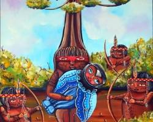
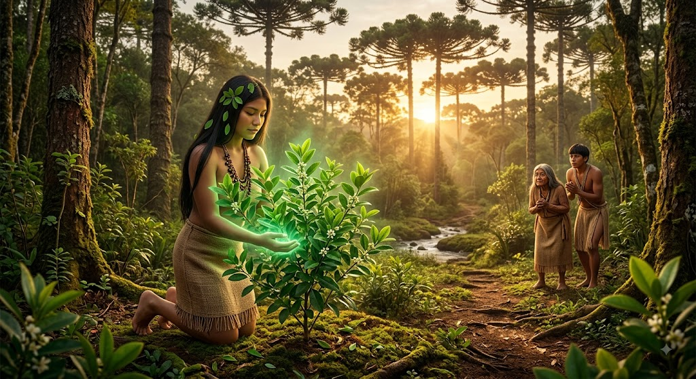
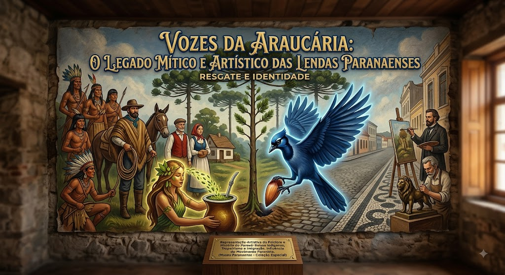

As terras paranaenses guardam histórias sussurradas pelo vento entre as copas das araucárias, revelando um folclore rico em mistério e conexão com a natureza. Das mãos da gralha-azul, que ao esconder pinhões semeou as grandes florestas do estado, à trágica paixão de Naipi e Tarobá, cuja fúria dos deuses deu origem às imponentes Cataratas do Iguaçu, essas narrativas se entrelaçam aos velhos causos contados nas fogueiras tropeiras. Mais do que simples mitos, esses contos preservam a alma, a memória e a profunda identidade cultural do povo paranaense.
Para este projeto, o tema escolhido é **Lendas Paranaenses**, abordando narrativas populares como a Gralha-Azul e a lenda da Erva-Mate.O site funcionará como um acervo cultural interativo para apresentar os principais contos do estado, acompanhados de ilustrações artísticas, contextualização histórica sobre a fauna e a flora locais e materiais educativos organizados de forma simples e acessível. O foco do estudo está na literatura oral e nos mitos do Paraná, analisando como o encontro entre povos originários, como os Kaingang e Guarani, além de tropeiros e imigrantes, ajudou a moldar a imaginação popular do estado. Esse assunto tem uma relação direta com a arte e a cultura paranaense, pois essas narrativas inspiraram movimentos artísticos locais, como o Movimento Paranista, e influenciaram grandes pintores e escritores. Além disso, transformaram elementos da natureza regional em verdadeiros símbolos de identidade e preservação da memória histórica.

A origem das lendas paranaenses remonta aos períodos pré-colonial e colonial na região do Paraná, nascendo da tradição oral dos povos indígenas Kaingang e Guarani para explicar a natureza e a vida. Com o tempo, a partir do século XVIII, os tropeiros espalharam essas narrativas pelas rotas do estado, misturando-as às suas próprias vivências. O desenvolvimento desse folclore ganhou força no século XIX e início do século XX, impulsionado pelo ciclo da erva-mate, pela chegada de imigrantes europeus e asiáticos e pela necessidade de preservar a memória ambiental, como no caso do mito da Gralha-Azul. Essa trajetória foi marcada pela atuação dos povos originários e dos tropeiros, além do impacto do Movimento Paranista na década de 1920, que buscou consolidar uma identidade cultural própria para o estado. Nesse contexto, destacaram-se intelectuais e artistas como o historiador Romário Martins, o escultor João Turin e o pintor Alfredo Andersen, fundamentais para registrar, registrar e transformar esses contos orais em patrimônio artístico e histórico do Paraná.

O tema das lendas paranaenses é fundamental para a arte e a cultura do Paraná porque resgata as raízes históricas do estado e consolida sua identidade regional, conectando a sabedoria indígena e a vivência tropeira ao cotidiano moderno. Suas narrativas destacam a relação mística com a natureza local, inspirando expressões artísticas marcantes como o Movimento Paranista, manifestado nas esculturas em bronze de João Turin, nas pinturas de cenários regionais por Alfredo Andersen e nos registros literários de Romário Martins. Além de transformarem elementos como a Gralha-Azul, a araucária e a erva-mate em símbolos oficiais de preservação e orgulho, essas lendas continuam vivas e fáceis de reconhecer hoje em dia no Mosaico Paranista do centro urbano, nas exposições do Memorial Paranista e do Museu Paranaense, no currículo das escolas e em espetáculos de teatro e dança por todo o estado.
